▲ 서해 노을 아래 원형 조형물이 서 있는 대부도 일대 전망 데크 ⓒ 한국관광공사
같은 서해 노을인데 왜 어떤 날은 바닷길이 열려 있고 어떤 날은 닫혀 있을까. 안산 대부도에서 선재도, 영흥도로 이어지는 드라이브 코스는 시화방조제와 두 개의 다리를 건너며 노을을 보기 좋지만, 탄도항 누에섬 바닷길과 선재도 목섬은 썰물 때만 걸을 수 있어 물때표를 모르면 헛걸음하기 쉽다.
이 글은 2026년 9월 29일 기준으로 바다타임이 게시한 국립해양조사원 물때표(안산 탄도·선재도)를 직접 조회해 10월 초 간조 시각과 조위를 표로 정리하고, K-water·안산시·한국관광공사 안내로 운영정보를 확인했다. 결론부터 말하면 10월 초에는 '노을 시각에 바닷길이 열리는 날'이 없어, 낮에는 바닷길·노을은 전망 포인트에서 나눠 보는 일정이 현실적이다.
1. 코스 한눈에 — 대부도·선재도·영흥도 노을 드라이브 동선
이 코스는 시화방조제로 대부도에 들어가 남쪽으로 내려가다 선재대교(대부도~선재도)와 영흥대교(선재도~영흥도)를 차례로 건너는 일방향 동선이다. 시화방조제는 시흥시 정왕동과 안산시 대부동을 잇는 12.7km 방조제로 소개된다(디지털시흥문화대전). 선재대교는 2000년 11월 개통한 길이 550m 다리, 영흥대교는 2001년 개통한 길이 1.25km 다리다(위키백과 기준).
| 지점 | 특징 | 추천 시간대 |
|---|---|---|
| ① 시화방조제 | 시화호와 서해를 가르는 12.7km 방조제 도로. 대부도 진입로 | 오후 진입 |
| ② 시화나래조력공원 | 달전망대에서 시화호·서해 조망, 저녁엔 외벽 조명 | 일몰 전 1~2시간 |
| ③ 탄도항·누에섬 | 바닷길로 걸어 들어가는 등대전망대, 풍력발전기 | 간조 시각에 맞춰(낮) |
| ④ 선재대교·목섬 | 썰물 때 갯벌 길이 열리는 작은 섬 목섬 | 간조 전후(낮) |
| ⑤ 영흥대교·십리포 | 다리 야경, 소사나무 군락이 있는 해변, 고래 조형물 전망 데크 | 일몰·황혼 |
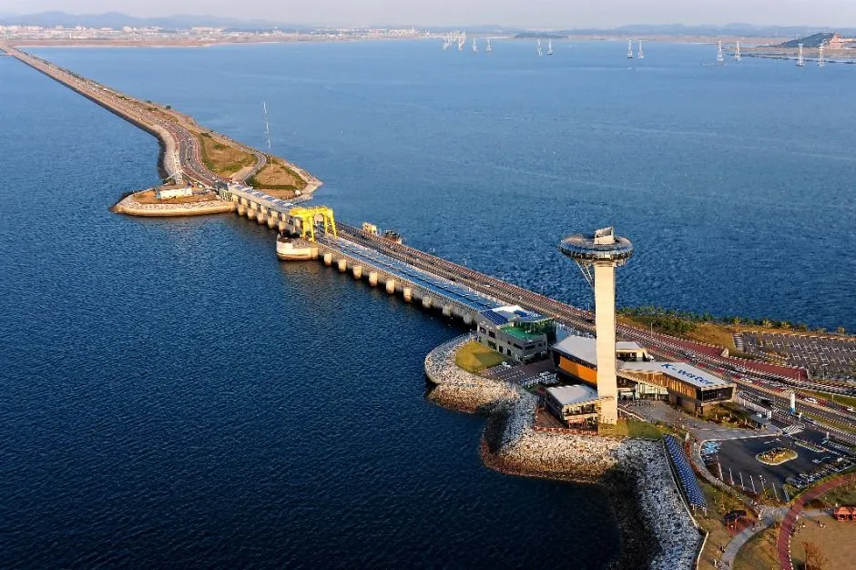
▲ 바다를 가로지르는 도로와 탑 모양 전망대를 공중에서 본 모습. 시화나래조력공원 일대를 담은 사진이다 ⓒ 한국관광공사
2. 시화나래조력공원 달전망대 — 시화호와 서해를 한 번에
대부도 진입 전후에 들르기 좋은 곳이 K-water가 운영하는 시화나래조력공원(달전망대)이다. 주소는 경기 안산시 단원구 대부황금로 1927이며, 공식 안내상 전망대 층은 매일 10:00~20:00 운영, 마지막 입장은 19:30이다. 주차는 시화나래조력공원 주차장에서 무료로 안내되어 있고, 문화관 앞 주차 공간은 대형버스·장애인·긴급 차량 전용이다. 일몰이 18시 전후인 10월 초에는 전망대가 노을 시각에도 열려 있다는 점이 누에섬 전망대와 다르다.
| 항목 | 내용 |
|---|---|
| 주소 | 경기 안산시 단원구 대부황금로 1927 |
| 전망대 운영 | 매일 10:00~20:00 (마지막 입장 19:30) |
| 주차 | 시화나래조력공원 주차장 무료 (문화관 앞은 대형버스·장애인·긴급 차량 전용) |
| 문의 | 070-4114-0101 |
| 부대시설(공식) | 1층 매장 11:00~19:00(월·화 휴무), 2층 카페 11:00~19:00, 전망대 층 카페 10:00~20:00 |
| 저녁 조명 | 일몰 후 외벽 조명이 켜진다고 알려짐 — 점등 시간은 현장 확인 |
공식 안내는 K-water 시화호조력발전소 페이지에서 확인할 수 있다. 달전망대 공식 안내 바로가기
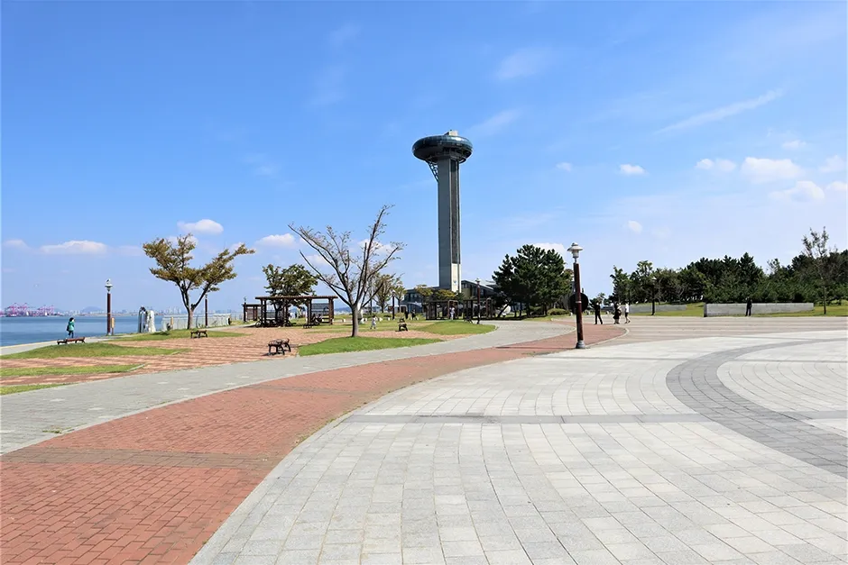
▲ 산책로 너머로 솟은 원형 전망대 타워. 조력공원 산책로는 넓어 걷기 편하다 ⓒ 한국관광공사
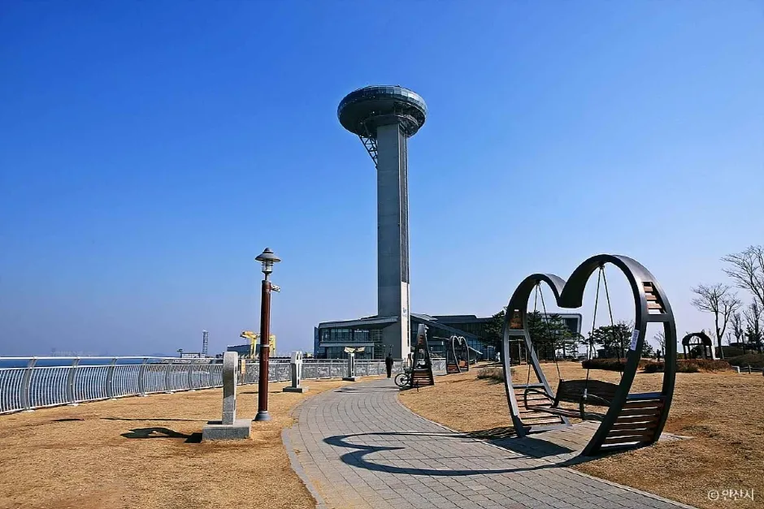
▲ 타워 앞 산책로와 원형 조형물, 바다 쪽 난간. 노을 무렵에는 난간 쪽에서 서해가 트인다 ⓒ 한국관광공사
3. 탄도항 누에섬 — 썰물 때만 걷는 1.2km 바닷길
안산시 관광 안내에 따르면 탄도 바닷길은 하루 두 번 바다가 갈라지며 약 1.2km의 갯벌 길이 드러나 무인도 누에섬까지 걸어갈 수 있는 길이다. 안산시 공식 안내의 안전 수칙은 "물때를 확인하고, 썰물 시작 후 30분~1시간 사이에 들어가면 안전하게 즐길 수 있다"이며, 바닷물이 차오르면 순식간에 길이 잠기므로 여유 있게 돌아와야 한다고 경고한다. 한국관광공사 등록 정보상 탄도항 누에섬은 상시 개방·연중무휴, 문의는 대부도관광안내소(1899-1720)다.
📍 왜 '물때'가 관건일까
서해는 조수 간만의 차가 커서, 만조에는 바닷길이 물에 잠기고 간조 무렵에 갯벌이 드러난다. 그래서 같은 장소라도 시간대에 따라 '걷는 길'이 될 수도, '바다 위 길'이 될 수도 있다. 돌아오는 시각까지 계산해 들어가야 한다.
누에섬 등대전망대는 한국관광공사 등록 정보상 하절기(3~10월) 09:00~18:00, 동절기(11~2월) 09:00~17:00, 휴관은 매주 월요일·1월 1일·설·추석 연휴이며, 안내문은 "관람시간은 물때의 영향으로 변동이 있으니 방문 전 관람시간표를 확인하라"고 적고 있다(문의 031-440-8310). 10월 초 일몰(18:04~18:17)은 전망대 마감(18:00)보다 늦으므로, 전망대 안에서 노을을 보려는 계획은 어렵다. 10월 5일·12일은 월요일이라 휴관이다.
안산시 안내 원문은 아래에서 볼 수 있다. 안산시 탄도 바닷길 안내 바로가기 한국관광공사 탄도항 일몰 여행기사 바로가기
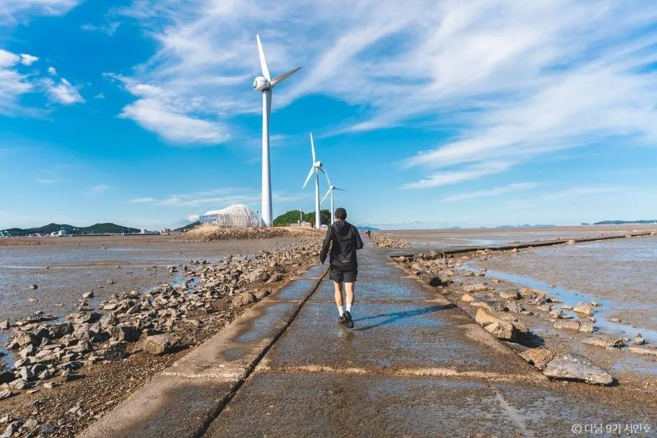
▲ 풍력발전기가 서 있는 갯벌 길을 걷는 사람. 탄도항에서 누에섬으로 이어지는 바닷길의 분위기를 보여 준다 ⓒ 한국관광공사
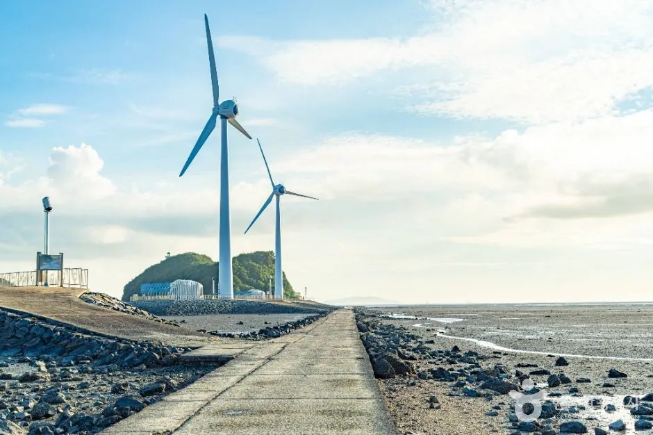
▲ 물이 빠져 갯벌이 드러난 탄도 바닷길. 풍력발전기가 선 섬을 향해 길이 이어진다 ⓒ 한국관광공사
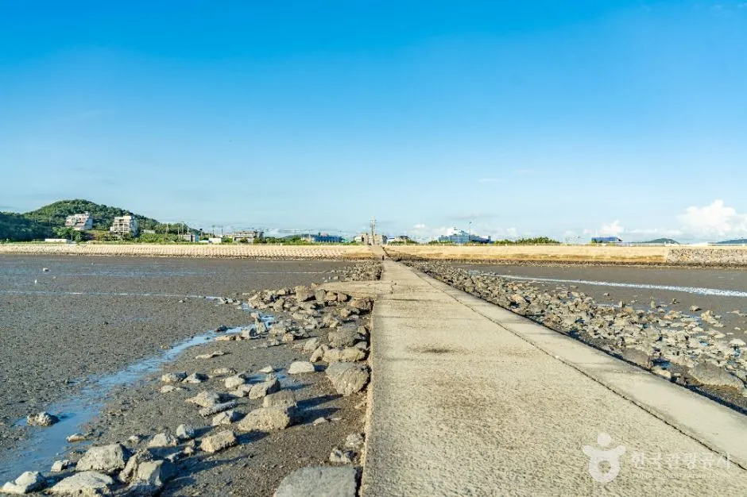
▲ 바닷길 양옆으로 드러난 갯벌과 바위. 물이 차오르면 이 갯벌이 다시 잠긴다 ⓒ 한국관광공사
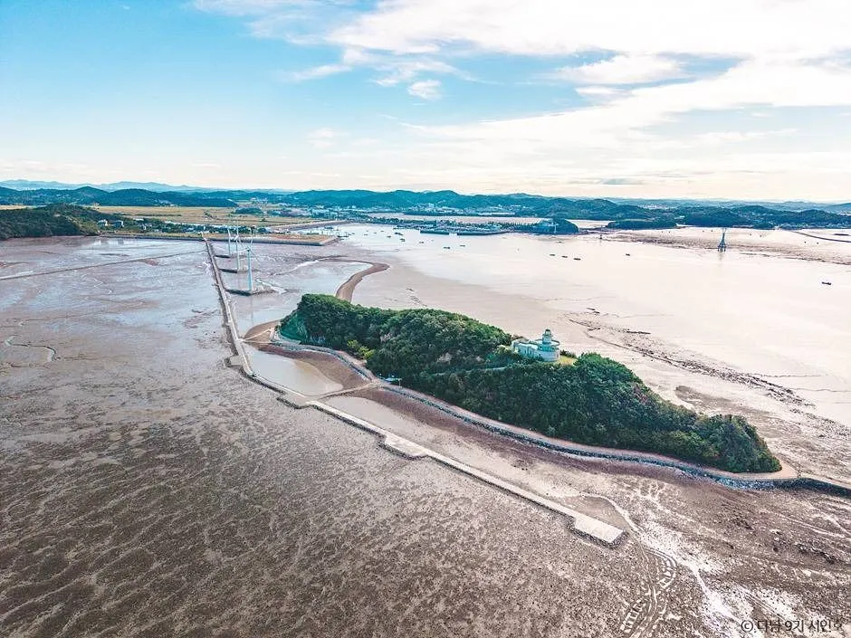
▲ 갯벌 위 길과 끝의 작은 섬을 공중에서 본 모습. 물이 빠져야 길이 드러난다 ⓒ 한국관광공사
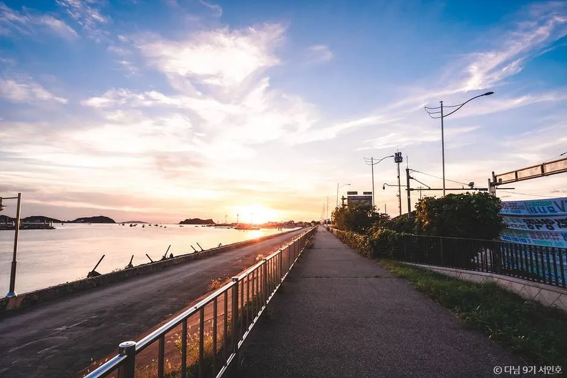
▲ 노을이 지는 바다 옆으로 이어진 산책 도로. 탄도항 일대의 해 질 녘 분위기다 ⓒ 한국관광공사
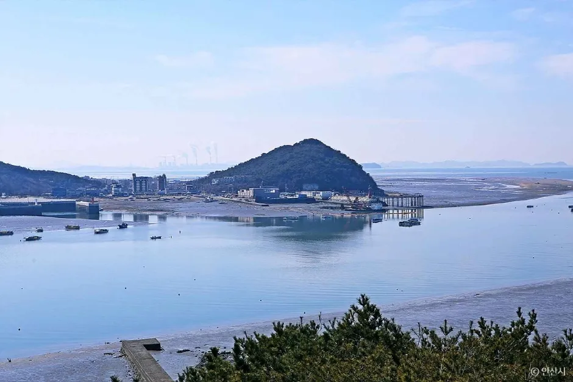
▲ 높은 곳에서 내려다본 물과 갯벌, 작은 섬. 물이 차면 풍경이 완전히 달라진다 ⓒ 한국관광공사
4. 2026년 10월 초 물때·일몰 — 조회한 실제 자료
바다타임이 국립해양조사원 제공 물때표로 게시한 안산 탄도 지점 자료를 2026년 9월 29일에 조회해 10월 1~12일 간조를 정리했다. 조위(cm)는 바다타임 표기 기준으로 숫자가 작을수록 물이 많이 빠진다. 일몰은 같은 사이트가 탄도 좌표 기준으로 계산해 표기한 값이다.
| 날짜 | 간조 시각(조위 cm) | 일몰 |
|---|---|---|
| 10/1(목) | 01:19(105) · 13:23(43) | 18:17 |
| 10/2(금) | 01:59(164) · 14:00(89) | 18:16 |
| 10/3(토) | 02:46(232) · 14:46(151) | 18:14 |
| 10/4(일) | 03:51(299) · 15:54(217) | 18:13 |
| 10/5(월) | 05:34(329) · 17:41(250) | 18:11 |
| 10/6(화) | 07:22(290) · 19:24(215) | 18:10 |
| 10/7(수) | 08:29(215) · 20:34(150) | 18:08 |
| 10/8(목) | 09:16(142) · 21:27(91) | 18:07 |
| 10/9(금) | 09:55(83) · 22:11(53) | 18:05 |
| 10/10(토) | 10:31(43) · 22:50(40) | 18:04 |
| 10/11(일) | 11:03(23) · 23:27(47) | 18:03 |
| 10/12(월) | 11:34(20) | 18:01 |
선재도(목섬) 지점 자료도 간조 시각이 탄도와 5분 안팎으로 같았다(예: 10/1 13:23, 10/10 10:32). 이 표에서 읽을 수 있는 점은 다음과 같다.
✅ 표에서 읽는 10월 초 물때
· 바닷길이 가장 깊게 빠지는 낮 간조: 10/1 13:23(43cm), 10/10 10:31(43cm), 10/11 11:03(23cm), 10/12 11:34(20cm)
· 10/3~10/7은 간조 조위가 대체로 150~330cm대로 이 표에서 물이 가장 덜 빠지는 시기(조금 무렵)다. 바닷길이 열리는 폭·시간이 줄어들 가능성이 있다
· 노을 시각(18:01~18:17) 즈음 간조인 날은 없다. 가장 가까운 10/5 17:41도 조위 250cm라 얕게만 빠진다
· 바닷길이 실제로 열리는 조위 기준은 이번 조사에서 공식 수치를 확인하지 못했다. 위 판단은 조위가 낮을수록 잘 열린다는 원리에 따른 해석이므로 현장·관광안내소 확인이 필요하다
| 확인처 | 방법 |
|---|---|
| 바다타임(badatime.com) | 지점 선택 후 날짜별 물때 조회 — 이 글의 자료 출처(국립해양조사원 제공 표기) |
| 선재도 목섬 물때 페이지(바다길) | 선재도·목섬 전용 물때 조회, 다른 날짜 조회 가능 |
| 국립해양조사원 바다누리 | 조석예보에서 안산·인천·영흥도 등 가까운 관측소 선택 |
| 한국천문연구원(KASI) | 생활천문관 일출·일몰 계산에서 지역·날짜 입력 (이번 조사에서는 직접 조회하지 못해 바다타임 값을 사용) |
| 현장 문의 | 대부도 관광안내소 1899-1720 |
탄도 물때(바다타임) 바로가기 선재도 물때(바다타임) 바로가기 선재도 목섬 물때 조회 바로가기 한국천문연구원 일출·일몰 계산 바로가기
5. 선재대교를 건너 목섬 — 모세의 기적 같은 갯벌 길
대부도에서 선재대교(550m)를 건너면 선재도이고, 인천 옹진군 영흥면 선재리에 목섬이 있다. 하루 두 번 썰물 때 모래·갯벌 길이 드러나 걸어서 섬까지 갈 수 있어 '모세의 기적'이라 불리며, 간조 전후 3~4시간 정도 관찰할 수 있다고 소개된다. 한국관광공사 등록 정보상 목섬은 상시 개방·연중무휴, 주차 '가능'으로 표기되어 있으나 주차요금은 공식 자료에서 확인하지 못했다. 후기 글에는 기본 30분 1,000원, 15분당 500원, 일 최대 10,000원이라는 정보가 있어 유료 주차장이 있는 것으로 알려졌지만, 같은 선재도의 어촌체험마을 등록 정보에는 '무료'로 표기되어 있어 장소별로 다르다. 현장 안내판을 확인하자.
목섬 정보는 한국관광공사 대한민국 구석구석에서 볼 수 있다. 목섬 정보 바로가기
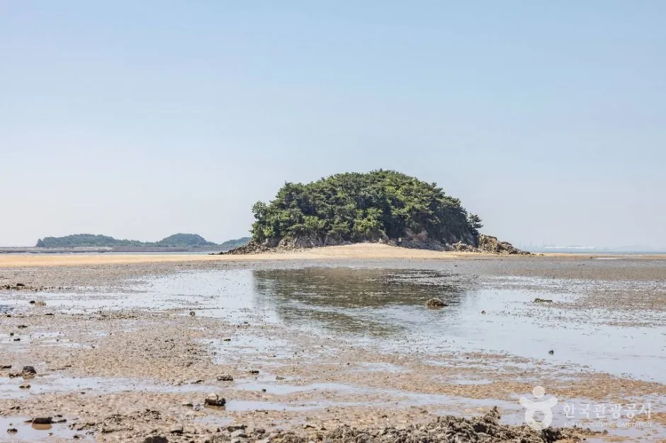
▲ 물이 빠져 갯벌과 모래가 드러난 목섬. 만조 때는 이 길이 잠긴다 ⓒ 한국관광공사
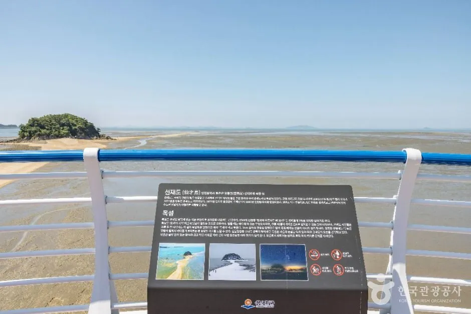
▲ 난간에 설치된 안내판. 물때와 이용 안내는 현장 안내판으로도 확인할 수 있다 ⓒ 한국관광공사
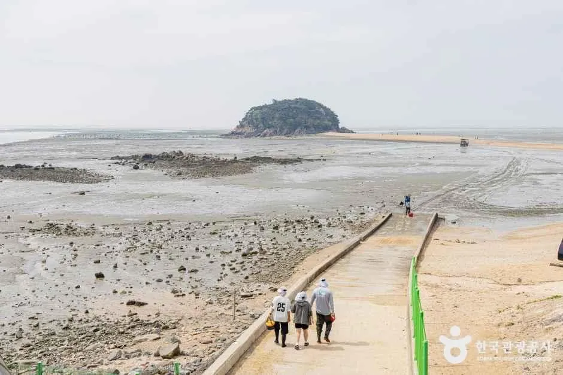
▲ 갯벌 위 길을 걸어 섬으로 향하는 사람들. 물이 빠진 시간에만 가능한 풍경이다 ⓒ 한국관광공사
6. 영흥대교 건너 십리포·하늘고래전망대 — 황혼 마무리
선재도에서 영흥대교(1.25km)를 건너면 영흥도다. 한국관광공사 등록 정보상 영흥대교는 '주차 불가'이므로 다리 위·갓길에 정차해 사진을 찍지 말고 인근 전망 시설을 이용하자. 영흥도 북쪽 십리포해변(영흥북로)은 소사나무 군락(약 900평으로 소개)이 있는 해변이며, 한국관광공사 등록 정보상 상시 개방·주차 가능(무료로 표기, 문의 032-886-6717)이다. 인근의 영흥도 하늘고래전망대(영흥북로 74)는 푸른 고래 조형물이 있는 해안 데크로, 황혼 무렵 사진이 관광공사 사이트에 올라 있다.
| 장소 | 정보 |
|---|---|
| 영흥대교 | 상시 개방 · 주차 불가로 표기 · 길이 1.25km |
| 십리포해변 | 상시 개방 · 주차 가능(무료 표기) · 문의 032-886-6717 |
| 영흥도 하늘고래전망대 | 옹진군 영흥면 영흥북로 74 · 고래 조형물 해안 데크 |
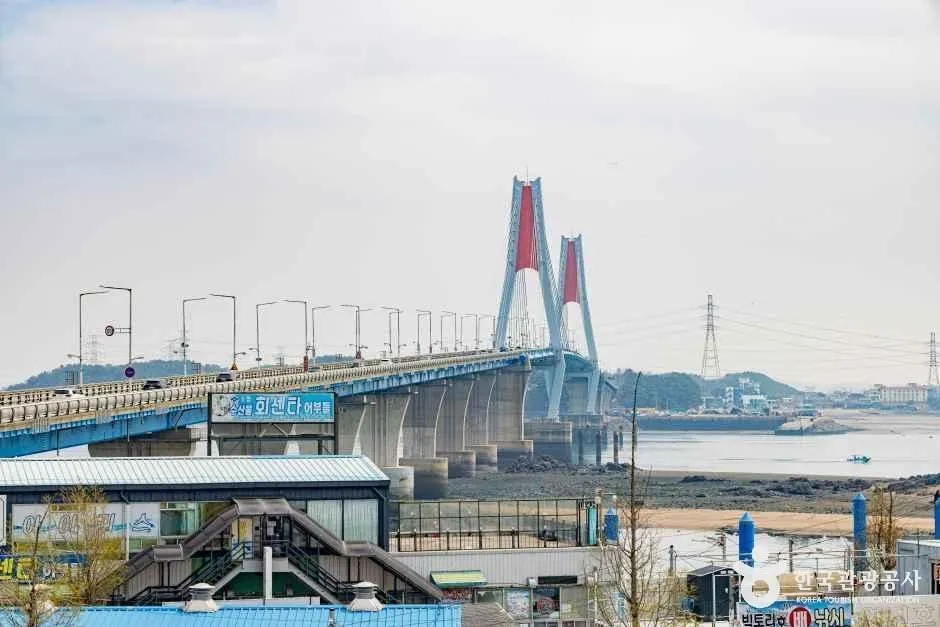
▲ 붉은 주탑이 솟은 영흥대교 낮 풍경 ⓒ 한국관광공사
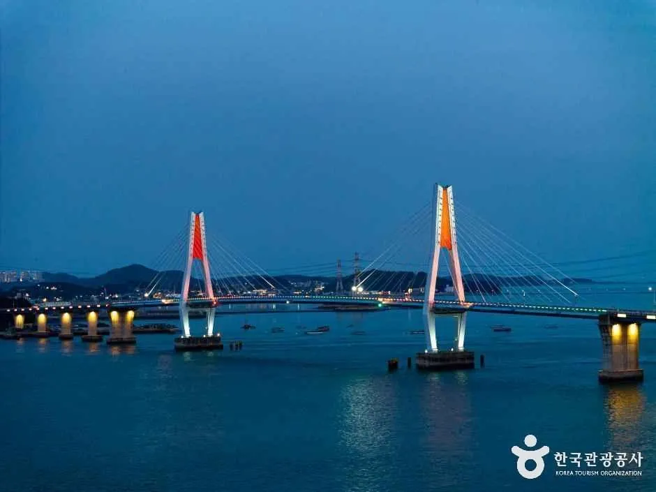
▲ 해 질 녘 조명이 켜진 다리. 노을이 끝난 뒤의 마무리 풍경이다 ⓒ 한국관광공사
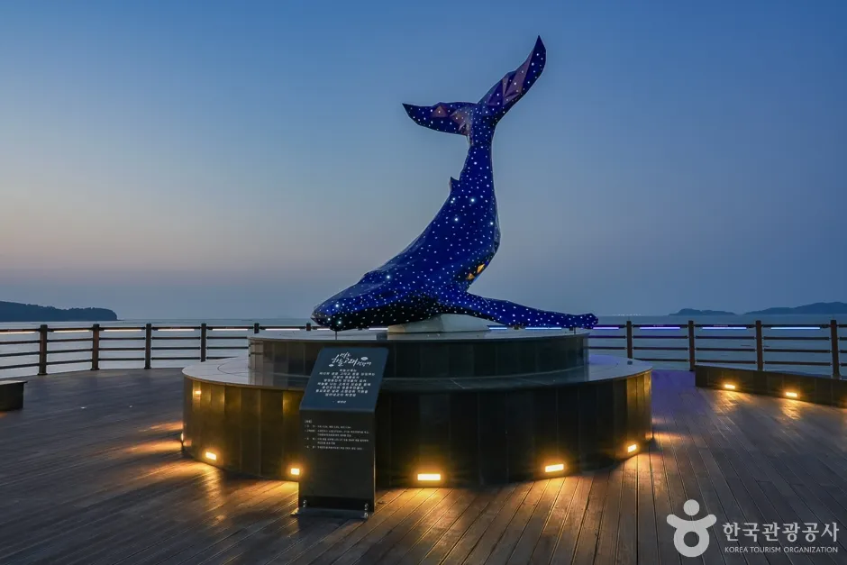
▲ 황혼 무렵 푸른 고래 조형물이 서 있는 영흥도 하늘고래전망대 해안 데크 ⓒ 한국관광공사
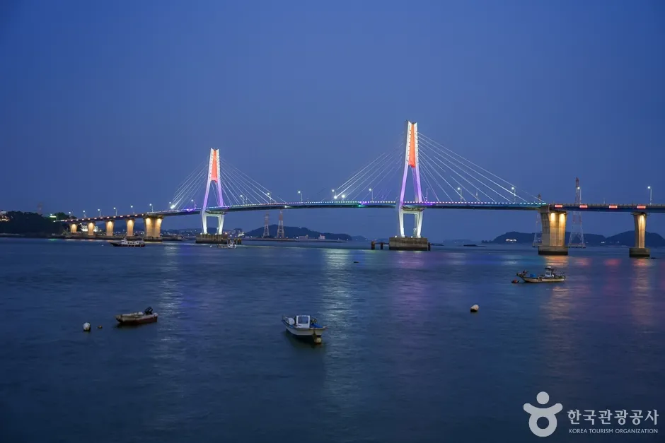
▲ 황혼 무렵 조명이 켜진 다리와 잔잔한 바다 ⓒ 한국관광공사
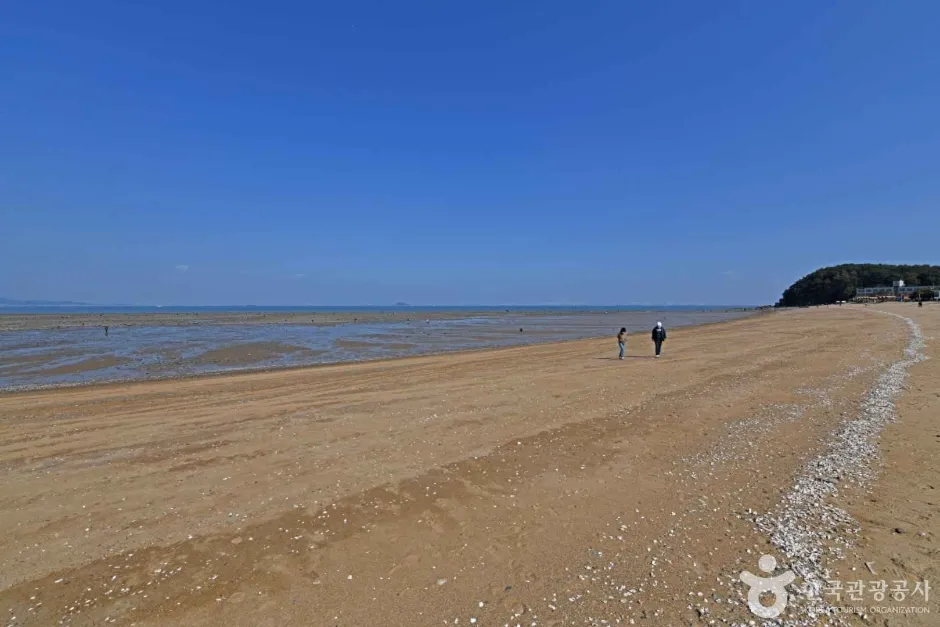
▲ 넓게 펼쳐진 모래 해변. 십리포해변 일대를 담은 사진이다 ⓒ 한국관광공사
7. 서울 출발 기준 일정 — 낮 바닷길 + 저녁 노을 조합
서울에서 대부도까지의 소요시간은 공식 자료가 없다. 검색 정보에서는 서울~대부도 약 56km, 무정체 기준 1시간 안팎으로 소개되지만 출처별 편차가 크고 주말·연휴에는 시화방조제 진입 정체로 늘어난다. 이 글에서는 서울 출발 기준 대부도 진입까지 1시간~1시간 30분, 영흥도까지 30~40분 추가로 '추정'하고 출발 전 내비게이션으로 확인하기를 권한다.
위의 물때표를 반영한 일정 예시는 아래와 같다. 조위가 낮은 10월 1일(목)을 예로 들었다(간조 13:23, 일몰 18:17).
| 시각 | 일정 |
|---|---|
| 10:30 | 서울 출발 |
| 11:30 무렵 | 시화나래조력공원 달전망대 (10:00 개장, 주차 무료) |
| 12:30 무렵 | 탄도항 도착·점심 → 물때표와 현장 안내 확인 |
| 12:30~14:30 | 탄도 바닷길·누에섬 (간조 13:23 전후, 전망대는 18:00까지 운영) |
| 15:00 무렵 | 선재대교 건너 목섬 — 간조 1시간 반 뒤라 물이 들어오는 중일 수 있어 바깥에서 조망 위주(바닷길 걷기는 다른 날짜로) |
| 17:00 무렵 | 영흥대교 건너 영흥도 이동, 서쪽이 트인 해안 데크 자리 잡기 |
| 18:17(일몰) | 십리포·하늘고래전망대 인근 해안에서 노을 (현장 방향에 따라 시야가 다를 수 있음) |
| 일몰 후 | 다리 야경·황혼 사진 → 귀가 |
탄도 바닷길과 목섬은 둘 다 간조 전후 약 1.5~2시간에만 안전하므로 같은 날 두 곳 모두 걷는 일정은 무리다. 한 곳만 바닷길로 걷고 다른 곳은 멀리서 보는 식으로 나누자.
10월 10일(토)은 오전 간조(10:31, 43cm)라 오전 출발 → 바닷길 → 오후 노을 순서로 짜야 한다. 반대로 10월 3~7일은 간조가 얕아 바닷길보다 노을·야경 중심으로 계획하는 편이 안전하다.
8. 주차·요금·시설 정리 — 공식 확인과 미확인을 구분
| 장소 | 내용 |
|---|---|
| 시화나래조력공원 | 주차 무료 · 공식(K-water) |
| 탄도항·누에섬 | 한국관광공사 등록 정보: 탄도항 누에섬 상시 개방, 등대전망대 주차 가능 · 일부 자료에 제1·2·3 무료 주차장으로 소개(공식 요금 표기는 확인 못함) |
| 누에섬 등대전망대 | 입장료 표기는 등록 정보에 없음 · 무료로 소개된 자료가 있으나 미확인 · 문의 031-440-8310 |
| 선재도 목섬 | 주차 가능 표기 · 요금 미확인(후기: 30분 1,000원·15분 500원·일 최대 10,000원) |
| 영흥도 십리포 | 한국관광공사 등록 정보상 주차 가능(무료 표기) · 현장 확인 |
| 영흥대교 | 주차 불가 표기 |
같은 서해 노을 코스를 다른 방향에서 즐기고 싶다면 77번 국도 서해안 노을 드라이브를, 물때에 따라 열리는 바닷길을 하나 더 보고 싶다면 화성 제부도 바닷길을 함께 참고하자. 서해권에서 차박으로 이어가고 싶다면 경기권 차박 명소 정리에서 허용 여부를 먼저 확인하는 것이 좋다.
▲ 서해 노을 아래 원형 조형물이 서 있는 대부도 일대 전망 데크 ⓒ 한국관광공사
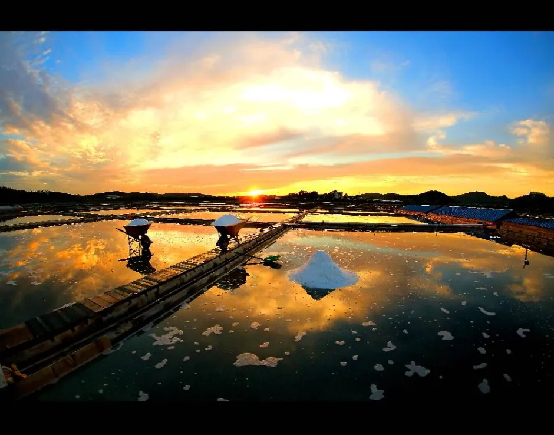
▲ 붉게 물든 노을이 수면에 비친 풍경. 노을 사진은 일몰 30분 전부터 색이 깊어지는 경우가 많다 ⓒ 한국관광공사
9. 출발 전 점검 리스트 — 바닷길 안전
✅ 바닷길 방문 전 체크
· 물때표: 당일 간조 시각·조위를 바다타임·바다누리로 확인 (조위가 높은 날은 길이 덜 열린다)
· 안산시 안전 수칙: 썰물 시작 후 30분~1시간 사이에 진입, 물이 차오르기 전에 여유 있게 복귀
· 누에섬 전망대: 3~10월 09:00~18:00, 월요일 휴관 — 10/5·10/12는 휴관
· 신발: 갯벌 옆 콘크리트 길은 미끄러울 수 있어 미끄럼 방지 신발 권장
· 일몰 후 이동: 바닷길은 해가 진 뒤 걷지 않기
· 주차: 다리 위 정차 금지(영흥대교 주차 불가 표기), 주차장 요금은 현장 안내판 확인
10. 요약
시화방조제(12.7km)→시화나래조력공원(달전망대 10:00~20:00, 주차 무료)→탄도항 누에섬→선재대교(550m) 목섬→영흥대교(1.25km)·십리포 순으로 달리는 코스다. 누에섬 바닷길과 목섬은 썰물 때만 열리며, 안산시는 썰물 시작 후 30분~1시간 사이 진입을 안내한다.
바다타임(국립해양조사원 제공 표기) 자료로 본 10월 초 낮 간조는 10/1 13:23(43cm), 10/10~12 오전(10:31~11:34)이 가장 깊고, 일몰은 10/1 18:17에서 10/10 18:04로 빨라진다. 노을 시각에 간조인 날은 없어 낮에는 바닷길, 노을은 달전망대·해안 데크에서 보는 조합이 현실적이다. 누에섬 등대전망대는 18시 마감이라 일몰 전에 닫는다. 서울 소요시간과 일부 주차요금은 공식 확인이 안 된 항목이다.